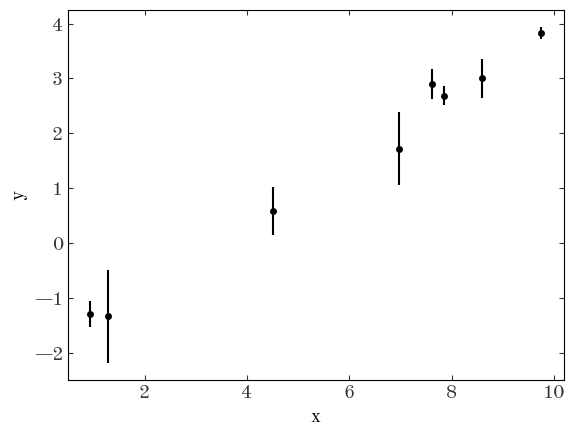
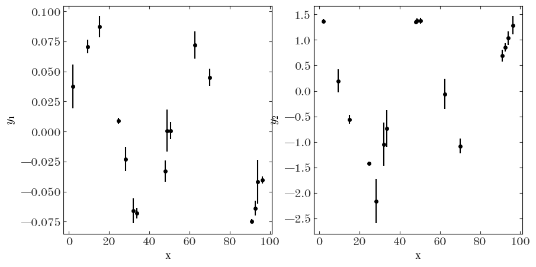
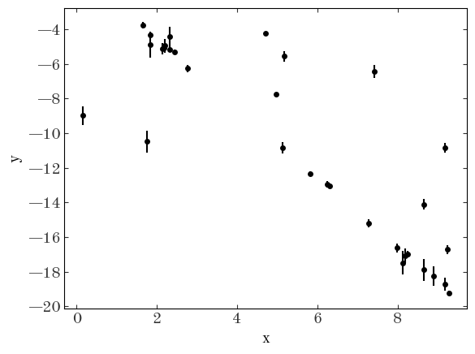
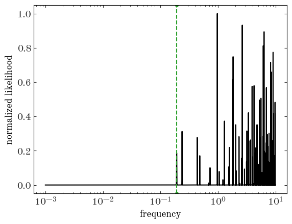
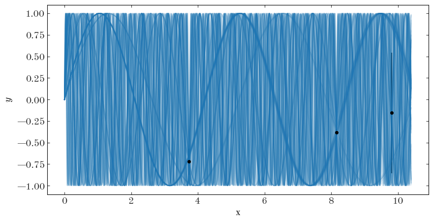
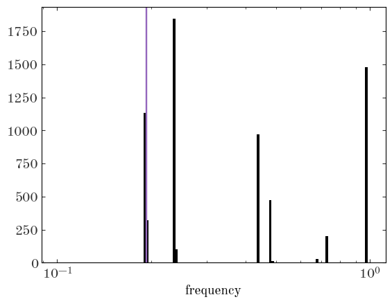

I wrote this originally as a set of notes to a student, so it is a bit informal and conversational. I hope it is still useful!
The Fisher information matrix is the expectation value of the variance of the log-likelihood function, which is often just the expectation of the Hessian of the log-likelihood function (i.e. the second derivatives with respect to the model parameters). That’s just a boring definition! For a data set $D$ and model parameters $\theta$,
I think of it as a result of a Taylor expansion of the likelihood function around the maximum likelihood parameter values. It is related to the curvature of the likelihood function around its maximum (because second derivatives are involves). It is not a fundamental object that is universally interpretable or meaningful. For example, if a model is a bad representation of data, or if the likelihood surface is extremely structured or multi-modal (i.e. cases where a Taylor expansion to low order is a bad representation of a function), then the Fisher information does not really summarize any useful properties of the data or model.
As an example of how to compute this thing, let’s use the ever-loved example of fitting a straight line to data $y$ at positions $x$ with uncertainties $\sigma_y$ only on the data $y$. Let’s generate some fake data to work with:
import matplotlib as mpl
import matplotlib.pyplot as plt
import numpy as np
%matplotlib inline
ndata = 8
rng = np.random.default_rng(42)
true_pars = rng.normal(0, 2.0, size=2)
x = np.sort(rng.uniform(0, 10, ndata))
yerr = 10 ** rng.uniform(-1, 0, ndata)
y = rng.normal(true_pars[0] * x + true_pars[1], yerr)
fig, ax = plt.subplots()
ax.errorbar(x, y, yerr, marker="o", ls="none")
ax.set(xlabel="x", ylabel="y")
[Text(0.5, 0, 'x'), Text(0, 0.5, 'y')]

In this case, our model for the data is one dimensional and linear:
In this model, the data points are independent, so the total likelihood $\mathcal{L}$ is just the product of the likelihoods for each individual data point:
So now we need to take second derivatives of this thing. The derivative here can be moved inside of the sum, so
To see how this works in this one-dimensional case, let’s expand the expression for the log-Normal distribution:
Our model $f$ only has two parameters, so we can write this matrix out explicitly, for one data point:
And so the Fisher information matrix is just the sum of these matrices over all data points:
This is an interesting (but simple) result: the Fisher information here does not even contain the model parameter values! That is because our model $f$ is linear in the model parameters and our likelihood is Gaussian, so the curvature is a constant. Let’s look at how to compute this given our toy data above.
# This is the matrix component of the Fisher information from above
M = np.array([[x**2, x], [x, np.ones_like(x)]])
M.shape
(2, 2, 8)
F = np.sum(1 / yerr**2 * M, axis=-1)
F.shape
(2, 2)
F
array([[10822.60583843, 1226.64589812],
[ 1226.64589812, 157.35632654]])
OK so we’ve computed the Fisher information! …So what? It turns out that the inverse of the Fisher information matrix is a useful matrix itself: it is the covariance matrix of the maximum likelihood parameter estimates. This is a useful property because it tells us the expected precision of our parameter estimates given the data we have. If the Fisher information is large, then the parameter uncertainties (i.e. the inverses) are small, so the parameters are well-constrained by the data. Let’s look at the inverse of the Fisher information matrix for our toy data above:
Finv = np.linalg.inv(F)
Finv
array([[ 0.00079335, -0.00618439],
[-0.00618439, 0.05456446]])
If we ignore the covariances (i.e. the off-diagonal terms), this tells us the expected errors we would get on the parameter values if we fit the data with a straight line. The diagonal terms are the variances of the parameter estimates, and the square roots of these are the expected standard deviations of the parameter estimates:
np.sqrt(np.diag(Finv))
array([0.02816638, 0.23359036])
Let’s now do a maximum likelihood fit using least-squares algebra and compare the results to the Fisher information matrix. With least-squares:
# Design matrix:
A = np.stack((x, np.ones_like(x)), axis=-1)
# Data covariance matrix:
Cinv = np.diag(1 / yerr**2)
Here is the standard matrix algebra for computing the maximum likelihood parameter estimates for a linear model (mle_pars below). In this case, the covariance matrix of the parameter estimates, $P$, is the inverse of the Fisher information matrix! (BTW, as an aside, it’s generally bad to construct the data covariance matrix this way and to do the matrix inverse explicitly here — a better way is to use, e.g., numpy.linalg.leastsq or numpy.linalg.solve)
P = np.linalg.inv(A.T @ Cinv @ A)
mle_pars = P @ A.T @ Cinv @ y
mle_pars
array([ 0.58499692, -1.87999557])
# Note that these are the same values as sqrt(diag(Finv))!
np.sqrt(np.diag(P))
array([0.02816638, 0.23359036])
The example above is a special case where we can solve for the Fisher information analytically and our model is linear. We are often in more complex situations in astronomy. One example is our project (where our likelihood function involves orbit integrations; here the model is nonlinear and the data are multi-dimensional). Another example is solving the Kepler problem by fitting a two-body orbit to, e.g., radial velocity data (model is nonlinear in the parameters but the data are still one dimensional).
In general, our data may be a vector $\boldsymbol{y}$ and our model may be a multi-output or vector function $\boldsymbol{f}(\boldsymbol{x} ,;, \boldsymbol{\theta})$ where $\boldsymbol{x}$ is a vector of independent variables and $\boldsymbol{\theta}$ is a vector of model parameters. If the likelihood is non-Gaussian, there’s not much we can do analytically. But if the likelihood is Gaussian, even with a nonlinear model, we can simplify the Fisher information matrix calculation by using the chain rule for derivatives.
In this case, our likelihood for one data point $\boldsymbol{y}_i$ (note the vector $y$) is:
Let’s now do an example of this for a two-dimensional model with some nonlinear model parameters. For example, a sinusoidal model of two variables with unknown amplitudes and frequency:
We again generate some toy data to play with (and yes I’m being naughty by using the same variable names as above):
ndata = 16
rng = np.random.default_rng(8675309)
true_pars = np.abs(rng.normal(0, 2.0, size=3))
x = np.sort(rng.uniform(0, 2 / true_pars[2], ndata))
yerr = 10 ** rng.uniform(-2, -0.5, (ndata, 2)) * true_pars[:2]
y = np.stack(
(
rng.normal(true_pars[0] * np.sin(2 * np.pi * true_pars[2] * x), yerr[:, 0]),
rng.normal(true_pars[1] * np.cos(2 * np.pi * true_pars[2] * x), yerr[:, 1]),
),
axis=-1,
)
# The inverse covariance matrix of the data (which here is diagonal):
Cinv = np.stack([np.diag(1 / yerr[i] ** 2) for i in range(ndata)], axis=0)
# We'll work with the data in a dictionary for convenience:
data = {"x": x, "y": y, "Cinv": Cinv, "yerr": yerr}
data["Cinv"].shape, data["y"].shape
((16, 2, 2), (16, 2))
fig, axes = plt.subplots(1, 2, figsize=(10, 5))
for i in range(2):
axes[i].errorbar(
data["x"], data["y"][..., i], data["yerr"][..., i], marker="o", ls="none"
)
axes[i].set(xlabel="x", ylabel=f"$y_{i+1}$")

Now let’s implement this model in JAX so we can make use of the auto-differentiation capabilities. We’ll again compute the Fisher information matrix and compare it to the maximum likelihood parameter estimates.
import jax
import jax.numpy as jnp
jax.config.update("jax_enable_x64", True)
@jax.jit
def model_f(x, pars):
return jnp.stack(
(
pars[0] * jnp.sin(2 * jnp.pi * pars[2] * x),
pars[1] * jnp.cos(2 * jnp.pi * pars[2] * x),
),
axis=-1,
)
@jax.jit
def ln_likelihood_one_star(pars, x, y, Cinv):
y_model = model_f(x, pars)
dy = y - y_model
return -0.5 * dy.T @ Cinv @ dy
ln_likelihood_helper = jax.vmap(ln_likelihood_one_star, in_axes=(None, 0, 0, 0))
@jax.jit
def ln_likelihood(pars, x, y, Cinv):
return jnp.sum(ln_likelihood_helper(pars, x, y, Cinv))
Let’s try evaluating our log-likelihood function at the true parameters:
ln_likelihood(true_pars, x, y, Cinv)
Array(-11.87854157, dtype=float64)
F = -jax.hessian(ln_likelihood)(true_pars, x, y, Cinv)
F
Array([[ 4.25782094e+05, -0.00000000e+00, -7.83052999e+06],
[-0.00000000e+00, 6.54218186e+03, 6.83218150e+05],
[-7.83052999e+06, 6.83218150e+05, 6.17018283e+08]], dtype=float64)
And once again, we can turn this into a prediction for the uncertainty on our model parameters:
Finv = np.linalg.inv(F)
Fisher_param_uncertainties = np.sqrt(np.diag(Finv))
Fisher_param_uncertainties
array([1.78625210e-03, 1.34166769e-02, 4.98967477e-05])
In this case, because our model is nonlinear, we can’t use the least-squares expressions above to analytically compute the maximum likelihood parameter estimates and precisions. Instead, we will specify a prior and use MCMC to generate samples from the posterior distribution. We can then compare the covariance matrix of the samples to the inverse of the Fisher information matrix (or just the diagonal terms, the parameter uncertainties).
@jax.jit
def ln_prior(pars):
lp = 0.0
# Gaussian priors on the amplitudes with mean=0, stddev=10:
lp += jax.scipy.stats.norm.logpdf(pars[0], 0, 10)
lp += jax.scipy.stats.norm.logpdf(pars[1], 0, 10)
# Uniform prior on the frequency:
lp += jax.scipy.stats.uniform.logpdf(pars[2], 0, 1)
lp = jnp.where((pars[2] > 0) & (pars[2] < 1), lp, -jnp.inf)
return lp
@jax.jit
def ln_posterior(pars, x, y, Cinv):
return ln_likelihood(pars, x, y, Cinv) + ln_prior(pars)
import blackjax
rng_key, warmup_key, sample_key = jax.random.split(jax.random.PRNGKey(42), 3)
init_pars = true_pars
func = lambda pars: ln_posterior(pars, x, y, Cinv)
warmup = blackjax.window_adaptation(blackjax.nuts, func)
(state, parameters), _ = warmup.run(warmup_key, init_pars, num_steps=1000)
def inference_loop(rng_key, kernel, initial_state, num_samples):
@jax.jit
def one_step(state, rng_key):
state, _ = kernel(rng_key, state)
return state, state
keys = jax.random.split(rng_key, num_samples)
_, states = jax.lax.scan(one_step, initial_state, keys)
return states
kernel = blackjax.nuts(func, **parameters).step
states = inference_loop(sample_key, kernel, state, 10_000)
mcmc_samples = states.position
First, let’s look at the parameter uncertainties as estimated by MCMC:
np.std(mcmc_samples, axis=0)
Array([1.81643774e-03, 1.36114911e-02, 4.97951817e-05], dtype=float64)
Let’s compare that to our Fisher approach above:
Fisher_param_uncertainties
array([1.78625210e-03, 1.34166769e-02, 4.98967477e-05])
These are very similar, as we expect!
We can also look at the full covariance matrix:
np.cov(mcmc_samples.T)
array([[ 3.29977603e-06, -4.92102682e-06, 4.80630330e-08],
[-4.92102682e-06, 1.85291220e-04, -2.69371139e-07],
[ 4.80630330e-08, -2.69371139e-07, 2.47980810e-09]])
Finv
array([[ 3.19069658e-06, -4.78172971e-06, 4.57876380e-08],
[-4.78172971e-06, 1.80007218e-04, -2.60004737e-07],
[ 4.57876380e-08, -2.60004737e-07, 2.48968543e-09]])
In the previous examples, the Fisher information matrix was a useful summary of the data and model. But what if the likelihood is very structured or multi-modal? As mentioned above, in these cases, the Fisher information matrix does not give us much useful information. For example, let’s consider a one-dimensional case where the data are generated from a sinusoidal model where the only unknown parameter is the frequency of the sinusoid, but we have very few observations. We’ll generate some toy data and compute the Fisher information matrix as usual (yes I’m using the same variable names again! Fire me…)
ndata = 3
rng = np.random.default_rng(101)
true_pars = jnp.array([0.19234]) # a random value, single parameter
x = np.sort(rng.uniform(0, 2 / true_pars[0], ndata))
yerr = 10 ** rng.uniform(-2, 0, ndata)
y = rng.normal(np.sin(2 * np.pi * true_pars[0] * x), yerr)
# The inverse covariance matrix of the data (which here is diagonal):
Cinv = (1 / yerr**2).reshape(ndata, 1, 1)
# We'll work with the data in a dictionary for convenience:
data = {"x": x, "y": y, "Cinv": Cinv, "yerr": yerr}
data["Cinv"].shape, data["y"].shape
((3, 1, 1), (3,))
fig, ax = plt.subplots()
ax.errorbar(
data["x"],
data["y"],
data["yerr"],
marker="o",
ls="none",
)
ax.set(xlabel="x", ylabel=f"$y$")
[Text(0.5, 0, 'x'), Text(0, 0.5, '$y$')]

These data are clearly not very constraining for our model parameters! In other words, these data are consistent with many different distinct values of the frequency — we therefore expect the likelihood function to be very multi-modal:
@jax.jit
def model_f(x, pars):
return jnp.sin(2 * jnp.pi * pars[0] * x).reshape(-1, 1)
@jax.jit
def ln_likelihood_one_star(pars, x, y, Cinv):
y_model = model_f(x, pars)
dy = y - y_model
return -0.5 * dy.T @ Cinv @ dy
ln_likelihood_helper = jax.vmap(ln_likelihood_one_star, in_axes=(None, 0, 0, 0))
@jax.jit
def ln_likelihood(pars, x, y, Cinv):
return jnp.sum(ln_likelihood_helper(pars, x, y, Cinv))
ln_likelihood_over_samples = jax.vmap(ln_likelihood, in_axes=(0, None, None, None))
We can evaluate the likelihood over a grid of (logarithmically spaced) frequencies to see this:
par_grid = 10 ** jnp.linspace(-3, 1, 65536).reshape(-1, 1)
ll_grid = ln_likelihood_over_samples(par_grid, x, y, Cinv)
fig, ax = plt.subplots()
ax.plot(par_grid, np.exp(ll_grid - ll_grid.max()), marker="")
ax.axvline(true_pars[0], color="tab:green", ls="--")
ax.set(xscale="log", xlabel="frequency", ylabel="normalized likelihood")
[None, Text(0.5, 0, 'frequency'), Text(0, 0.5, 'normalized likelihood')]

The Fisher information matrix and expected parameter variances is not going to be very informative in this case, but let’s compute it at the true parameter values anyways:
F = -jax.hessian(ln_likelihood)(true_pars, x, y, Cinv)
Finv = np.linalg.inv(F)
fisher_freq_err = np.squeeze(np.sqrt(Finv))
fisher_freq_err
array(0.00084499)
At face value, Fisher analysis here tells us that we expect to be able to constrain our model parameter (the frequency) to a very high precision. But this is clearly not the case (based on the structure in the likelihood function)! This is because the Fisher information matrix gives us a local measurement: it is related to the curvature of the one mode of the likelihood function near the true parameter values.
For this toy problem, optimization or even MCMC will not work well because the likelihood function is very structured. In this case, we would need to use a more sophisticated sampling method like nested sampling or just brute force rejection sampling to explore the corresponding posterior probability distribution containing this likelihood function. An example of this is below, just for fun! (and note this is basically the same problem as is solved by thejoker and in this paper).
The procedure below generates samples from a prior distribution, and rejection samples using the likelihood function, which then represent samples from the posterior distribution. We can then look at the “true” uncertainty of the model parameter and compare to what our Fisher analysis told us above.
nsamples = 10_000_000
keys = jax.random.split(jax.random.PRNGKey(12345), 2)
prior_samples = 10 ** jax.random.uniform(
keys[0], shape=(nsamples,), minval=-5, maxval=1
).reshape(-1, 1)
uu = jax.random.uniform(keys[1], shape=(nsamples,))
ln_likelihood_values = ln_likelihood_over_samples(
prior_samples, data["x"], data["y"], data["Cinv"]
)
accepted_samples_mask = uu < np.exp(ln_likelihood_values - ln_likelihood_values.max())
print(accepted_samples_mask.sum())
posterior_samples = prior_samples[accepted_samples_mask]
13417
Let’s visualize some of the posterior samples:
fig, ax = plt.subplots(figsize=(10, 5))
ax.errorbar(
data["x"],
data["y"],
data["yerr"],
marker="o",
ls="none",
)
ax.set(xlabel="x", ylabel="$y$")
xgrid = np.linspace(0, 2 / true_pars[0], 1024)
for i in range(128):
ax.plot(
xgrid,
model_f(xgrid, posterior_samples[i])[:, 0],
marker="",
ls="-",
color="tab:blue",
alpha=0.1,
)

We can plot the Fisher-predicted uncertainty on the frequency parameter over a zoom-in of the posterior samples in frequency to see that it really only captures the curvature of the likelihood function in the mode near the true parameter value:
plt.hist(posterior_samples[:, 0], bins=np.logspace(-1, 0, 128))
plt.xscale("log")
plt.xlabel("frequency")
plt.axvspan(
true_pars[0] - fisher_freq_err, true_pars[0] + fisher_freq_err, color="tab:purple"
)
<matplotlib.patches.Rectangle at 0x7f90c8b43140>
